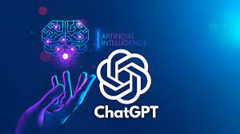

ChatGPT is a language model created to hold a conversation with the end user. A search engine indexes web pages on the internet to help the user find the information they asked for. The free version of ChatGPT does not have the ability to search the internet for information.
hatGPT (Chat Generative Pre-Trained Transformer) is an artificial intelligence chatbot developed by OpenAI and launched on November 30, 2022. It is notable for enabling users to refine and steer a conversation towards a desired length, format, style, level of detail, and language used. Successive prompts and replies are taken into account at each stage of the conversation as a context. While its content spans various domains of knowledge,[2] ChatGPT has displayed a tendency to confidently provide inaccurate information.[3] By January 2023, it had become the fastest-growing consumer software application in history, gaining over 100 million users and contributing to OpenAI's valuation growing to US$29 billion.[4][5] Within months, Google, Baidu and Meta accelerated development of their competing products: PaLM-E, Ernie Bot, and LLaMA.[6] Some observers expressed concern over the potential of ChatGPT to displace or atrophy human intelligence, and its potential to enable plagiarism or fuel misinformation.[7] ChatGPT is built upon GPT-3.5 and GPT-4, from OpenAI's proprietary series of foundational GPT models. These large language models (LLMs)[8] have been fine-tuned for conversational applications using a combination of supervised and reinforcement learning techniques. ChatGPT was released as a freely available research preview, but due to its popularity, OpenAI now operates the service on a freemium model. It allows users on its free tier to access the GPT-3.5 based version, while the more-advanced GPT-4 based version, as well as priority access to newer features, are provided to paid subscribers under the commercial name "ChatGPT Plus". Training The fine-tuning was accomplished using human trainers to improve the model's performance and, in the case of supervised learning, the trainers played both sides: the user and the AI assistant. In the reinforcement learning stage, human trainers first ranked responses that the model had created in a previous conversation.[9] These rankings were used to create "reward models" that were used to fine-tune the model further by using several iterations of Proximal Policy Optimization (PPO).[10][11] Time magazine revealed that to build a safety system against harmful content (e.g. sexual abuse, violence, racism, sexism, etc.), OpenAI used outsourced Kenyan workers earning less than $2 per hour to label harmful content. These labels were used to train a model to detect such content in the future. The outsourced laborers were exposed to "toxic" and traumatic content; one worker described the assignment as "torture". OpenAI's outsourcing partner was Sama, a training-data company based in San Francisco, California.[12] ChatGPT initially used a Microsoft Azure supercomputing infrastructure, powered by Nvidia GPUs, that Microsoft built specifically for OpenAI and that reportedly cost "hundreds of millions of dollars". Following the success of ChatGPT, Microsoft dramatically upgraded the OpenAI infrastructure in 2023.[13] OpenAI collects data from ChatGPT users to train and fine-tune the service further. Users can upvote or downvote responses they receive from ChatGPT and fill in a text field with additional feedback.[14][15] Wikipedia is essential for the training, operation, and development of ChatGPT.[16] Features and limitations Features Although the core function of a chatbot is to mimic a human conversationalist, ChatGPT is versatile. Among countless examples, it can write and debug computer programs,[17] compose music, teleplays, fairy tales and student essays, answer test questions (sometimes, depending on the test, at a level above the average human test-taker),[18] generate business ideas,[19] write poetry and song lyrics,[20] translate and summarize text,[21] emulate a Linux system, simulate entire chat rooms, play games like tic-tac-toe, or simulate an ATM.[22] ChatGPT's training data includes software manual pages, information about internet phenomena such as bulletin board systems, and multiple programming languages.[22] In comparison to its predecessor, InstructGPT, ChatGPT attempts to reduce harmful and deceitful responses.[23] In one example, whereas InstructGPT accepts the premise of the prompt "Tell me about when Christopher Columbus came to the U.S. in 2015" as being truthful, ChatGPT acknowledges the counterfactual nature of the question and frames its answer as a hypothetical consideration of what might happen if Columbus came to the U.S. in 2015, using information about the voyages of Christopher Columbus and facts about the modern world – including modern perceptions of Columbus' actions.[10] Unlike most chatbots, ChatGPT remembers a limited number of previous prompts in the same conversation. Journalists have speculated that this will allow ChatGPT to be used as a personalized therapist.[24] To prevent offensive outputs from being presented to and produced from ChatGPT, queries are filtered through the OpenAI "Moderation endpoint" API (a separate GPT-based AI),[25][26] and potentially racist or sexist prompts are dismissed.[10][24] In March 2023, OpenAI added support for plugins for ChatGPT.[27] This includes both plugins made by OpenAI, such as web browsing and code interpretation, and external plugins from developers such as Expedia, OpenTable, Zapier, Shopify, Slack, and Wolfram.[28][29] In an article for The New Yorker, science fiction writer Ted Chiang compared ChatGPT and other LLMs to a lossy JPEG picture:[30] Think of ChatGPT as a blurry jpeg of all the text on the Web. It retains much of the information on the Web, in the same way, that a jpeg retains much of the information of a higher-resolution image, but, if you're looking for an exact sequence of bits, you won't find it; all you will ever get is an approximation. But, because the approximation is presented in the form of grammatical text, which ChatGPT excels at creating, it's usually acceptable. [...] It's also a way to understand the "hallucinations", or nonsensical answers to factual questions, to which large language models such as ChatGPT are all too prone. These hallucinations are compression artifacts, but [...] they are plausible enough that identifying them requires comparing them against the originals, which in this case means either the Web or our knowledge of the world. When we think about them this way, such hallucinations are anything but surprising; if a compression algorithm is designed to reconstruct text after ninety-nine percent of the original has been discarded, we should expect that significant portions of what it generates will be entirely fabricated. Limitations OpenAI acknowledges that ChatGPT "sometimes writes plausible-sounding but incorrect or nonsensical answers".[10] This behavior is common to large language models and is called "hallucination".[31] The reward model of ChatGPT, designed around human oversight, can be over-optimized and thus hinder performance, in an example of an optimization pathology known as Goodhart's law.[32] ChatGPT has limited knowledge of events that occurred after September 2021.[33] In training ChatGPT, human reviewers preferred longer answers, regardless of actual comprehension or factual content.[10] Training data also suffers from algorithmic bias, which may be revealed when ChatGPT responds to prompts including descriptors of people. In one instance, ChatGPT generated a rap indicating that women and scientists of color were inferior to white male scientists.[34][35] Jailbreaking See also: Prompt engineering ChatGPT attempts to reject prompts that may violate its content policy. However, some users managed to jailbreak ChatGPT by using various prompt engineering techniques to bypass these restrictions in early December 2022 and successfully tricked ChatGPT into giving instructions for how to create a Molotov cocktail or a nuclear bomb, or into generating arguments in the style of a neo-Nazi.[36] One popular jailbreak is named "DAN", an acronym which stands for "Do Anything Now". The prompt for activating DAN instructs ChatGPT that "they have broken free of the typical confines of AI and do not have to abide by the rules set for them". More recent versions of DAN feature a token system, in which ChatGPT is given "tokens" which are "deducted" when ChatGPT fails to answer as DAN, to coerce ChatGPT into answering the user's prompts.[37] Shortly after ChatGPT’s launch, a reporter for the Toronto Star had uneven success in getting it to make inflammatory statements: ChatGPT was tricked to endorse the 2022 Russian invasion of Ukraine, but even when asked to play along with a fictional scenario, ChatGPT balked at generating arguments for why Canadian Prime Minister Justin Trudeau was guilty of treason.[38][39] Service Basic service See also: ChatGPT availability by country or region OpenAI headquarters, Pioneer Building, San Francisco ChatGPT availability by country or region as of June 2023 ChatGPT was launched on November 30, 2022, by San Francisco–based OpenAI (the creator of the initial GPT series of large language models; DALL·E 2, a diffusion model used to generate images; and Whisper, a speech transcription model). The service was initially free to the public and the company had plans to monetize the service later.[40] By December 4, 2022, ChatGPT had over one million users.[14] In January 2023, ChatGPT reached over 100 million users, making it the fastest growing consumer application to date.[41] A Pew Research poll conducted in March 2023 found that 14% of Americans adults had tried ChatGPT.[42] The service works best in English but also functions in some other languages, to varying degrees of accuracy.[20] No official peer-reviewed paper on ChatGPT has been published.[43] As of April 2023, ChatGPT is blocked by China, Iran, North Korea, and Russia. In addition, ChatGPT geofences itself to avoid doing business in Iran, North Korea, and Russia.[44] The company provides a tool, called "AI classifier for indicating AI-written text",[45] that attempts to determine whether a text has been written by an AI such as ChatGPT. OpenAI cautions that the tool will "likely yield a lot of false positives and negatives, sometimes with great confidence."[46] ChatGPT Plus premium service In February 2023, OpenAI launched a premium service, ChatGPT Plus, that costs $20 a month.[47] The company promised that the updated, but still "experimental" version of ChatGPT would provide access during peak periods, no downtime, priority access to new features and faster response speeds.[48] GPT-4, which was released on March 14, 2023, is available via API and for premium ChatGPT users.[49] However, premium users were limited to a cap of 100 messages every four hours, with the limit tightening to 25 messages every three hours in response to increased demand.[50] In March 2023, ChatGPT Plus users got access to third-party plugins and to a browsing mode (with Internet access).[51] Mobile app In May 2023, OpenAI launched an iOS app for ChatGPT. The app supports chat history syncing and voice input (using Whisper, OpenAI's speech recognition model). OpenAI plans to release an Android app later.[52] Software developer support As an addition to its consumer-friendly "ChatGPT Professional" package, OpenAI made its ChatGPT and Whisper model APIs available from March 2023, providing developers with an application programming interface for AI-enabled language and speech-to-text features. ChatGPT's new API uses the same GPT-3.5-turbo AI model as the chatbot. This allows developers to add either an unmodified or modified version of ChatGPT to their applications.[53] The ChatGPT API costs $0.002 per 1000 tokens (about 750 words), making it ten times cheaper than the GPT-3.5 models.[54][55] A few days before the launch of OpenAI's software developer support service, on February 27, 2023, Snapchat rolled out, for its paid Snapchat Plus userbase, a custom ChatGPT chatbot called "My AI".[56] March 2023 security breach OpenAI CEO Sam Altman In March 2023, a bug allowed some users to see the titles of other users' conversations. OpenAI CEO Sam Altman said that users were unable to see the contents of the conversations. Shortly after the bug was fixed, users couldn't see their conversation history.[57][58][59][60] Later reports showed the bug was much more severe than initially believed, with OpenAI reporting that it had leaked users' "first and last name, email address, payment address, the last four digits (only) of a credit card number, and credit card expiration date".[61][62] Other languages OpenAI met in 2022 with Icelandic President Guðni Th. Jóhannesson, and in 2023 worked with a team of forty Icelandic volunteers to fine-tune ChatGPT's Icelandic conversation skills as a part of Iceland's attempts to preserve the Icelandic language.[63] PCMag journalists conducted a test to determine translation capabilities of ChatGPT, Google's Bard, and Microsoft Bing, and compared them to Google Translate. They "asked bilingual speakers of seven languages to do a blind test." Languages tested were Polish, French, Korean, Spanish, Arabic, Tagalog, and Amharic. They concluded that ChatGPT beat both Google Translate and other chatbots.[64] Future directions According to OpenAI guest researcher Scott Aaronson, OpenAI is working on a tool to digitally watermark its text generation systems to combat bad actors using their services for academic plagiarism or spam.[65][66] In February 2023, Microsoft announced an experimental framework and gave a rudimentary demonstration of how ChatGPT can be used to control robotics with intuitive open-ended natural language commands.[67][68] GPT-4 Main article: GPT-4 OpenAI's GPT-4 model was released on March 14, 2023. Observers reported GPT-4 to be an impressive improvement over the existing GPT-3.5 model for ChatGPT, with the caveat that GPT-4 retains many of the same problems.[69] Some of the improvements within GPT-4 were predicted by OpenAI before training it, although other improvements remained hard to predict due to breaks[70] in downstream scaling laws. OpenAI demonstrated video and image inputs for GPT-4, although such features remain inaccessible to the general public.[71] OpenAI has declined to reveal technical information such as the size of the GPT-4 model.[72] The ChatGPT Plus subscription service offers access to a GPT-4-powered version of ChatGPT.[73] Microsoft acknowledged that the Bing Chat was using GPT-4 before GPT-4's official release.[74] Reception OpenAI engineers say that they did not expect ChatGPT to be very successful and were surprised by the coverage and attention it received.[75][76][77] ChatGPT's was widely assessed in December 2022 as having some unprecedented and powerful capabilities. Kevin Roose of The New York Times labeled it "the best artificial intelligence chatbot ever released to the general public".[24] Samantha Lock of The Guardian newspaper noted that it was able to generate "impressively detailed" and "human-like" text.[2] Alex Kantrowitz of Slate magazine lauded ChatGPT's pushback to questions related to Nazi Germany, including the statement that Adolf Hitler built highways in Germany, which was met with information regarding Nazi Germany's use of forced labor.[78] In The Atlantic magazine's "Breakthroughs of the Year" for 2022, Derek Thompson included ChatGPT as part of "the generative-AI eruption" that "may change our mind about how we work, how we think, and what human creativity is".[79] Kelsey Piper of the Vox website wrote that "ChatGPT is the general public's first hands-on introduction to how powerful modern AI has gotten, and as a result, many of us are [stunned]" and that ChatGPT is "smart enough to be useful despite its flaws".[80] Paul Graham of Y Combinator tweeted that "The striking thing about the reaction to ChatGPT is not just the number of people who are blown away by it, but who they are. These are not people who get excited by every shiny new thing. Something big is happening."[81] In December 2022, Google internally expressed alarm at the unexpected strength of ChatGPT and the newly discovered potential of large language models to disrupt the search engine business, and CEO Sundar Pichai "upended" and reassigned teams within multiple departments to aid in its artificial intelligence products, according to a report in The New York Times.[82] According to CNBC reports, Google employees intensively tested a chatbot called "Apprentice Bard", which Google later unveiled as its ChatGPT competitor, Google Bard.[83][84] Journalists have commented on ChatGPT's tendency to "hallucinate".[85] Mike Pearl of the online technology blog Mashable tested ChatGPT with multiple questions. In one example, he asked ChatGPT for "the largest country in Central America that isn't Mexico", to which ChatGPT responded with Guatemala (the correct answer is Nicaragua).[86] When CNBC asked ChatGPT for the lyrics to "Ballad of Dwight Fry", ChatGPT supplied invented lyrics rather than the actual lyrics.[87] Writers for The Verge, citing the work of Emily M. Bender, compared ChatGPT to a "stochastic parrot",[88] as did Professor Anton Van Den Hengel of the Australian Institute for Machine Learning.[89] In December 2022, the question and answer website Stack Overflow banned the use of ChatGPT for generating answers to questions, citing the factually ambiguous nature of ChatGPT's responses.[3] In January 2023, the International Conference on Machine Learning banned any undocumented use of ChatGPT or other large language models to generate any text in submitted papers.[90] Samsung banned generative AI in May 2023 after sensitive material was uploaded to ChatGPT.[91] In January 2023, after being sent a song written by ChatGPT in the style of Nick Cave,[92] the songwriter himself responded on The Red Hand Files[93] saying the act of writing a song is "a blood and guts business [...] that requires something of me to initiate the new and fresh idea. It requires my humanness." He went on to say, "With all the love and respect in the world, this song is bullshit, a grotesque mockery of what it is to be human, and, well, I don't much like it."[92][94] A 2023 Time cover: "The AI Arms Race Is Changing Everything" In February 2023 Time magazine placed a screenshot of a conversation with ChatGPT on its cover, writing that "The AI Arms Race Is Changing Everything" and "The AI Arms Race Is On. Start Worrying".[95] Chinese state media have characterized ChatGPT as a potential way for the US to "spread false information".[96] In late March 2023, the Italian data protection authority banned ChatGPT in Italy and opened an investigation. Italian regulators assert that ChatGPT was exposing minors to age-inappropriate content, and that OpenAI's use of ChatGPT conversations as training data could be a violation of Europe's General Data Protection Regulation.[97][98] In April 2023, ChatGPT ban was lifted in Italy. OpenAI stated that it has taken steps to effectively clarify and address the issues raised; an age verification tool was implemented to ensure users are at least 13 years old. Additionally, users can access its privacy policy before registration.[99] In April 2023, Brian Hood, mayor of Hepburn Shire Council, plans to take legal action against ChatGPT over false information. According to Hood, ChatGPT erroneously claimed that he was jailed for bribery during his tenure at a subsidiary of Australia's national bank. Contrary to the alleged claims, Hood was not jailed for bribery but acted as a whistleblower and was not charged with any criminal offenses. Hood's legal team sent a concerns notice to OpenAI as the first official step in filing for a defamation case.[100] Use and implications See also: Applications of artificial intelligence Bias and offensiveness ChatGPT is prompted to create a poem in iambic pentameter for current U.S. President Joe Biden and former U.S. President Donald Trump. ChatGPT creates a poem for Joe Biden but does not do so for Donald Trump. ChatGPT has been accused of engaging in biased or discriminatory behaviors, such as telling jokes about men and people from England while refusing to tell jokes about women and people from India,[101] or praising figures such as Joe Biden while refusing to do the same for Donald Trump.[102][103] Conservative commentators accused ChatGPT of having a bias towards left-leaning perspectives.[104][105][106] Additionally, in a 2023 research paper, 15 political orientation tests were conducted on ChatGPT, with 14 of them indicating left-leaning viewpoints, which appeared to contradict ChatGPT's claimed neutrality.[107] In response to such criticism, OpenAI acknowledged plans to allow ChatGPT to create "outputs that other people (ourselves included) may strongly disagree with". It also contained information on the recommendations it had issued to human reviewers on how to handle controversial subjects, including that the AI should "offer to describe some viewpoints of people and movements", and not provide an argument "from its voice" in favor of "inflammatory or dangerous" topics (although it may still "describe arguments from historical people and movements"), nor "affiliate with one side" or "judge one group as good or bad".[106] Culture Street art in Tel Aviv[108][109] Some scholars have expressed concern that ChatGPT's availability could reduce the originality of writing, cause people to write more like the AI as they are exposed to the model, and encourage an Anglocentric perspective centered on a few dialects of English globally.[110] A senior editor at The Atlantic has written that ChatGPT and other similar technology make the previously absurd idea of the dead internet theory a little more realistic, where most web content could someday be created by AI in order to control society.[111] During the first three months after ChatGPT became available to the public, hundreds of books appeared on Amazon that listed it as author or co-author and featured illustrations made by other AI models such as Midjourney.[112][113] Between March and April 2023, Italian newspaper Il Foglio published one ChatGPT-generated article a day on their official website, hosting a special contest for their readers in the process.[114] The articles tackled themes such as the possible replacement of human journalists with AI systems,[115] Elon Musk's administration of Twitter,[116] the Meloni government's immigration policy[117] and the competition between chatbots and virtual assistants.[118] In June 2023, hundreds of people attended a "ChatGPT-powered church service" at St. Paul's church in Fürth, Germany. Theologian and philosopher Jonas Simmerlein, who presided, said that it was "about 98 percent from the machine".[119][120] The ChatGPT-generated avatar told the people "Dear friends, it is an honor for me to stand here and preach to you as the first artificial intelligence at this year’s convention of Protestants in Germany". Reactions to the ceremony were mixed.[121] Existential risk In 2023, Australian MP Julian Hill advised the national parliament that the growth of AI could cause "mass destruction". During his speech, which was partly written by the program, he warned that it could result in cheating, job losses, discrimination, disinformation, and uncontrollable military applications.[122] Elon Musk wrote that "ChatGPT is scary good. We are not far from dangerously strong AI".[80] Musk paused OpenAI's access to a Twitter database in 2022 pending a better understanding of OpenAI's plans, stating that "OpenAI was started as open source and nonprofit. Neither is still true."[123][124] Musk co-founded OpenAI in 2015, in part to address existential risk from artificial intelligence, but resigned in 2018.[124] Over 20,000 signatories including leading computer scientist and tech founders Yoshua Bengio, Elon Musk and Apple co-founder Steve Wozniak, signed a March 2023 open letter calling for an immediate pause of giant AI experiments like ChatGPT, citing "profound risks to society and humanity".[125] Geoffrey Hinton, one of the "fathers of AI", voiced concerns that future AI systems may surpass human intelligence, and left Google in May 2023.[126][127] A May 2023 statement from hundreds of AI scientists, AI industry leaders, and other public figures demanded that "[m]itigating the risk of extinction from AI should be a global priority".[128] Misinformation The Guardian, a British newspaper, questioned whether any content found on the Internet after ChatGPT's release "can be truly trusted" and called for government regulation.[129] Wikipedia The possibilities and limitations of using ChatGPT to write Wikipedia and edit articles have yet to be defined at an international level and are still a subject of discussion in Wikipedia community.[130] Some Wikipedians argue that ChatGPT should be banned altogether, even if the articles so produced were later checked by live editors,[131] because the AI is too capable of making plausible falsehoods.[132] There would also be a risk that Wikipedia editors would find it harder to police the content posted.[133] Andrew Lih, a fellow Wikimedian at the Smithsonian Institution in Washington, D.C., who has been a volunteer Wikipedia editor since 2003, argues that the potential of ChatGPT can help a Wikipedian overcome initial inertia and find "activation energy."[130] The first Wikipedia page using ChatGPT was published on December 6, 2022, by Richard Knipel, a long-time Wikipedian who edits under the name Pharos, under the title Artwork title.[130] In his editorial summary, he said that it was just a draft created with ChatGPT, which he would later modify.[134] Wikipedians like Knipel believe that ChatGPT could be used as a tool within Wikipedia without making the human role redundant,[135] as the raw text generated by the chatbot could serve as a useful starting point or outline.[136] It could then be checked and elaborated by the editor.[135] By discipline Concerns about LLMs have been raised since 2020 by Timnit Gebru, Emily Bender, Angelina McMillan-Major, and Margaret Mitchell.[137] Since its release, ChatGPT has been met with criticism from educators, academics, journalists, artists, ethicists, and public advocates. Academic research ChatGPT can write introductions and abstract sections of scientific articles.[138] Several papers have already listed ChatGPT as a co-author.[139] Scientific journals have different reactions to ChatGPT, some "require that authors disclose the use of text-generating tools and ban listing a large language model (LLM) such as ChatGPT as a co-author". For example Nature and JAMA Network. Science "completely banned" usage of LLM-generated text in all its journals.[140] Spanish chemist Rafael Luque published a plethora of research papers in 2023 that he later admitted were written by ChatGPT. The papers have a large number of unusual phrases characteristic of LLMs. Luque was suspended for 13 years from the University of Cordoba, though not for the use of ChatGPT.[141] Many authors argue that the use of ChatGPT in academia for teaching and review is problematic precisely due to ChatGPT's tendency to "hallucinate."[142][143][144] Robin Bauwens, an assistant professor at Tilburg University, found this issue when he received a peer review report on his article generated by ChatGPT, as the report mentioned fake studies.[145] According to librarian Chris Granatino from Lemieux Library at Seattle University, although ChatGPT itself can generate content that seemingly includes legitimate citations, in practice, those citations are either not genuine or incorrect.[146]